С чего начать
Макияж по типу кожи
Подберите макияж под жирную, сухую или проблемную кожу.
Типы макияжа
Выберите идеальный вариант с нами, который подходит именно вам.
Подобрать уходовую и декоративную косметику
Гели, пенки, кремы, сыворотки, маски, тоники, масла, скрабы, лосьоны и защитные средства с SPF
Тональные, туши, помады и другие средства.
Разобраться в составе
Какие ингредиенты подходят вашей коже.
Разобраться в типах кожи
Найдете практические руководства по самым частым проблемам кожи.
Подготовка кожи
Уход перед макияжем для лучшего результата.
Косметические процедуры перед макияжем
Выбирать деликатные текстуры и техники макияжа.
Как подобрать макияж по типу кожи
Тип кожи напрямую влияет на то, как ложится макияж и насколько долго он держится. Правильно подобранные средства помогают избежать жирного блеска, подчеркнуть текстуру кожи или скрыть несовершенства.
Жирная кожа: стойкий макияж без блеска
Основная задача — контролировать блеск и продлить стойкость макияжа.
👉 Подробнее о макияже для жирной кожи
Пошаговый макияж для жирной кожи: лучшие средства.
Готовый набор средств для жирной кожи
Независимый обзор. Продукты не спонсируются.
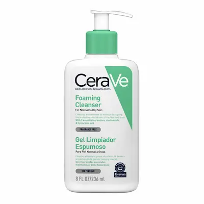
Шаг 1: Очищение
Продукт: CeraVe Foaming Cleanser
Высокая эффективность
Удаляет себум и подготавливает кожу.
С ниацинамидом — снижает жирность кожи.
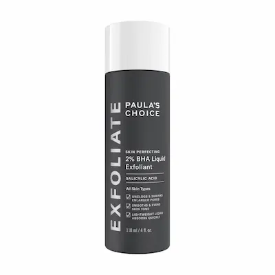
Шаг 2: Тоник
Продукт: Paula’s Choice BHA Toner
Высокая эффективность
Сужает поры и уменьшает жирный блеск.
Салициловая кислота очищает поры.
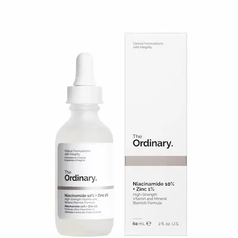
Шаг 3: Сыворотка
Продукт: The Ordinary Niacinamide 10%
Высокая эффективность
Регулирует выработку себума.
Отлично подходит под макияж.
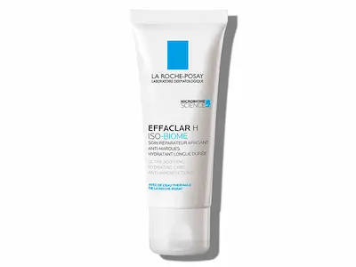
Шаг 4: Увлажнение
Продукт: La Roche-Posay Effaclar H
Высокая эффективность
Легкое увлажнение без жирности.
Не забивает поры, быстро впитывается.
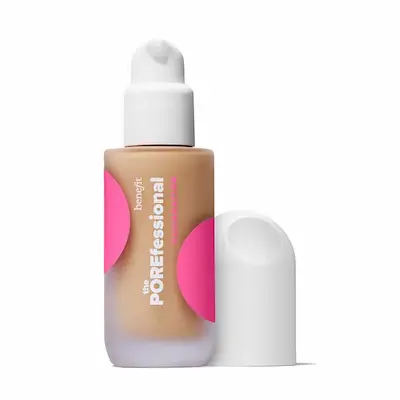
Шаг 5: Праймер
Продукт: Benefit POREfessional
Высокая эффективность
Сглаживает поры и матирует.
Увеличивает стойкость макияжа.
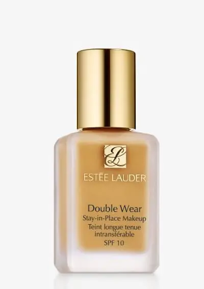
Шаг 6: Тон
Продукт: Estée Lauder Double Wear
Высокая эффективность
Максимальная стойкость и матовый финиш.
Идеален для жирной кожи.
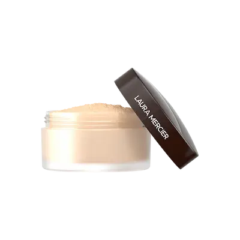
Шаг 7: Фиксация
Продукт: Laura Mercier Translucent Powder
Высокая эффективность
Фиксирует и убирает блеск.
Не утяжеляет макияж.
Сухая кожа: увлажнение и ровный тон
Главная цель — увлажнение и создание ровного, сияющего тона без шелушений.
👉 Подробнее о макияже для сухой кожи
Пошаговый макияж для сухой кожи: лучшие средства.
Готовый набор средств для сухой кожи
Независимый обзор. Продукты не спонсируются.
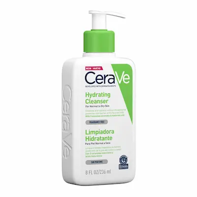
Шаг 1: Очищение
Продукт: CeraVe Hydrating Cleanser
Высокая эффективность
Мягко очищает без пересушивания.
Содержит керамиды и гиалуроновую кислоту.
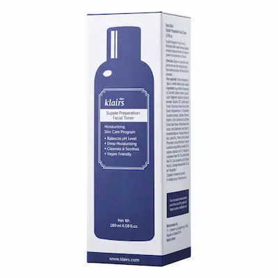
Шаг 2: Тоник
Продукт: Klairs Supple Preparation Toner
Высокая эффективность
Интенсивно увлажняет кожу.
Убирает ощущение стянутости.

Шаг 3: Сыворотка
Продукт: The Ordinary Hyaluronic Acid 2%
Высокая эффективность
Глубокое увлажнение кожи.
Удерживает влагу и разглаживает кожу.
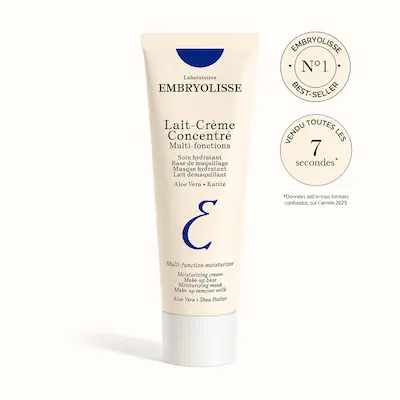
Шаг 4: Крем
Продукт: Embryolisse Lait-Crème Concentré
Высокая эффективность
Питает и подготавливает кожу.
Создает идеальную базу под макияж.
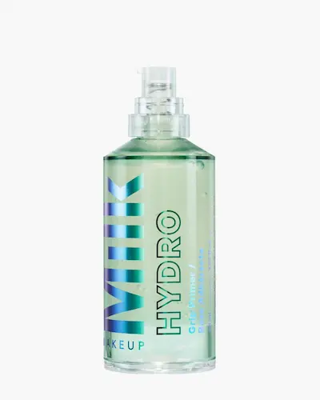
Шаг 5: Праймер
Продукт: Milk Hydro Grip Primer
Высокая эффективность
Увлажняет и удерживает макияж.
Создает эффект “влажной кожи”.
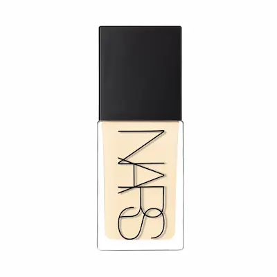
Шаг 6: Тон
Продукт: NARS Light Reflecting Foundation
Высокая эффективность
Лёгкое покрытие с сияющим финишем.
Не подчеркивает шелушения.
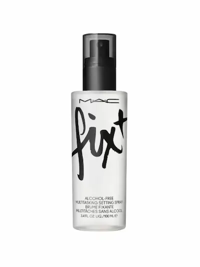
Шаг 7: Фиксация
Продукт: MAC Fix+
Высокая эффективность
Освежает и убирает сухость.
Добавляет естественное сияние.
Кожа с акне: маскировка без вреда
Важно не только скрыть несовершенства, но и не ухудшить состояние кожи.
👉 Подробнее о макияже для кожи с акне
Пошаговый макияж для кожи с акне: лучшие средства.
Готовый набор средств для кожи с акне и постакне
Независимый обзор. Продукты не спонсируются.
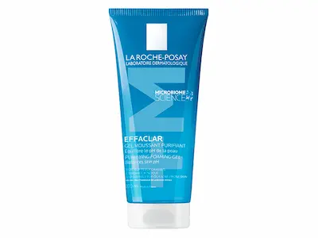
Шаг 1: Очищение
Продукт: La Roche-Posay Effaclar Gel
Высокая эффективность
Очищает кожу и уменьшает воспаления.
Подходит для чувствительной кожи с акне.
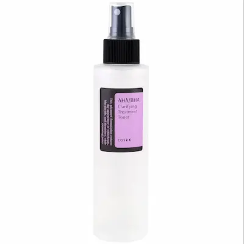
Шаг 2: Тоник
Продукт: COSRX AHA/BHA Clarifying Toner
Высокая эффективность
Очищает поры и выравнивает текстуру.
Мягкие кислоты уменьшают высыпания.
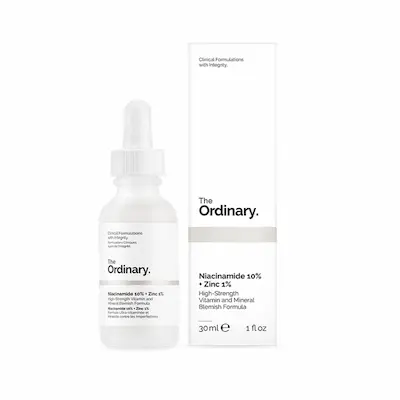
Шаг 3: Сыворотка
Продукт: The Ordinary Niacinamide 10%
Высокая эффективность
Снижает воспаления и жирность.
Успокаивает кожу и уменьшает покраснения.
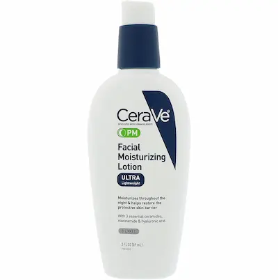
Шаг 4: Крем
Продукт: CeraVe PM Facial Lotion
Высокая эффективность
Лёгкое увлажнение без закупорки пор.
Некомедогенный и подходит под макияж.
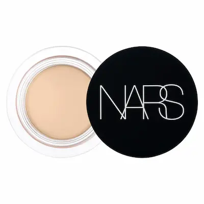
Шаг 5: Коррекция
Продукт: NARS Soft Matte Concealer
Высокая эффективность
Точечно перекрывает несовершенства.
Плотное покрытие без эффекта маски.
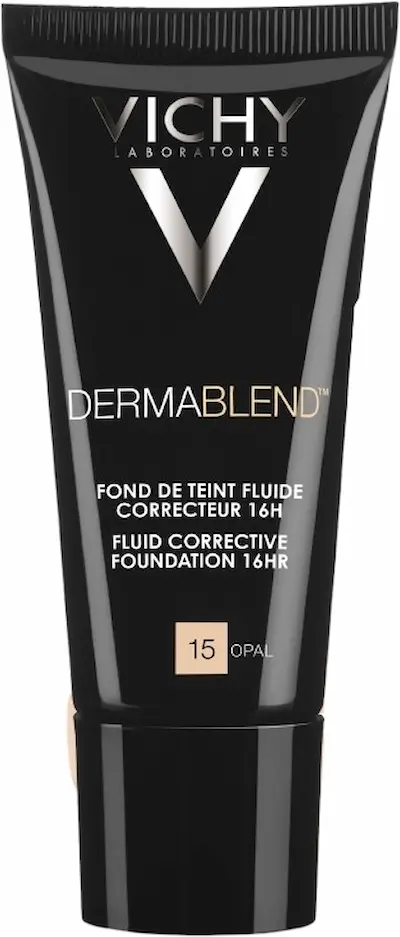
Шаг 6: Тон
Продукт: Vichy Dermablend Foundation
Высокая эффективность
Высокое покрытие для проблемной кожи.
Не забивает поры и долго держится.
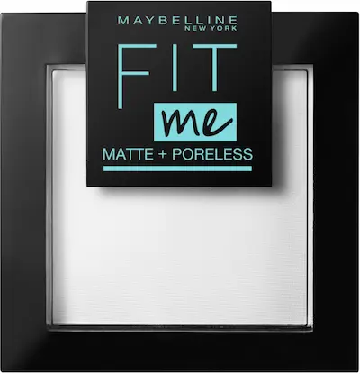
Шаг 7: Фиксация
Продукт: Maybelline Fit Me Matte Powder
Высокая эффективность
Фиксирует макияж и уменьшает блеск.
Лёгкая текстура без перегрузки кожи.
Правильный выбор косметики с учётом типа кожи делает макияж более стойким, естественным и безопасным для кожи.
Кожа с признаками возрастных изменений: свежий и ухоженный вид без эффекта перегруженности
Основная задача — визуально разгладить кожу, вернуть ей сияние и избежать эффекта «пересушенного» или перегруженного макияжа.
👉 Подробнее о макияже для кожи с возрастными изменениями
Пошаговый макияж для кожи с первыми признаками старения
Готовый набор средств для естественного сияния
Независимый обзор. Продукты не спонсируются.
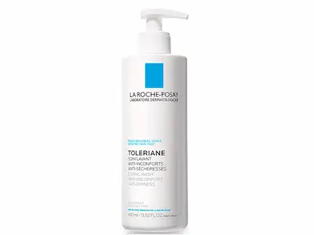
Шаг 1: Очищение
Продукт: La Roche-Posay Toleriane Hydrating Gentle Cleanser
Высокая эффективность
Деликатно очищает и сохраняет увлажнение кожи.
Не стягивает кожу и идеально подходит перед макияжем.
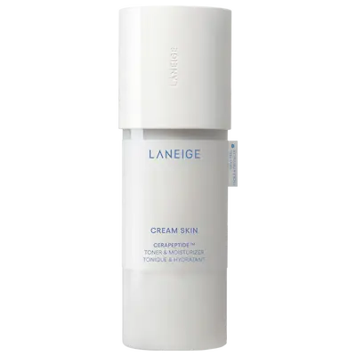
Шаг 2: Тонизирование
Продукт: Laneige Cream Skin Toner
Высокая эффективность
Интенсивно увлажняет и разглаживает кожу.
Подготавливает кожу к макияжу.
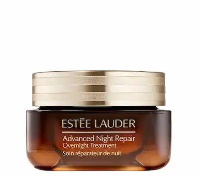
Шаг 3: Сыворотка
Продукт: Estée Lauder Advanced Night Repair
Высокая эффективность
Придает коже гладкость и упругость.
Улучшает текстуру кожи перед макияжем.
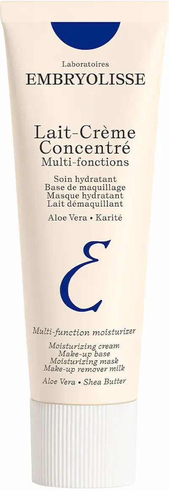
Шаг 4: Увлажнение
Продукт: Embryolisse Lait-Crème Concentré
Высокая эффективность
Создает идеальную базу под макияж.
Придает коже мягкость и сияние.
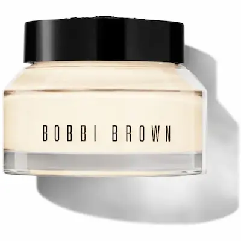
Шаг 5: Праймер
Продукт: Bobbi Brown Vitamin Enriched Face Base
Высокая эффективность
Сглаживает текстуру кожи.
Обеспечивает более ровное нанесение макияжа.
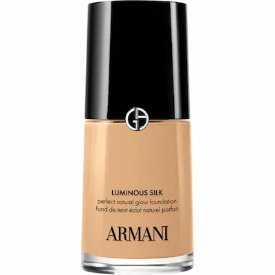
Шаг 6: Тон
Продукт: Giorgio Armani Luminous Silk
Высокая эффективность
Легкое покрытие с эффектом сияния.
Не подчеркивает морщины и сухость.

Шаг 7: Румяна
Продукт: Rare Beauty Liquid Blush
Высокая эффективность
Освежает лицо и придает естественный румянец.
Кремовая текстура идеально подходит для зрелой кожи.
Подготовка кожи перед макияжем — 80% идеального результата
Даже самый дорогой тональный крем не ляжет красиво, если кожа не подготовлена. Шелушения, жирный блеск, расширенные поры — всё это становится заметнее под макияжем.
Правильная подготовка кожи помогает выровнять текстуру, продлить стойкость макияжа и добиться эффекта «дорогой кожи» без перегрузки декоративной косметикой.
Подбирая правильный уход перед макияжем, вы можете использовать меньше тональных средств и при этом выглядеть лучше.
Подобрать идеальную подготовку кожи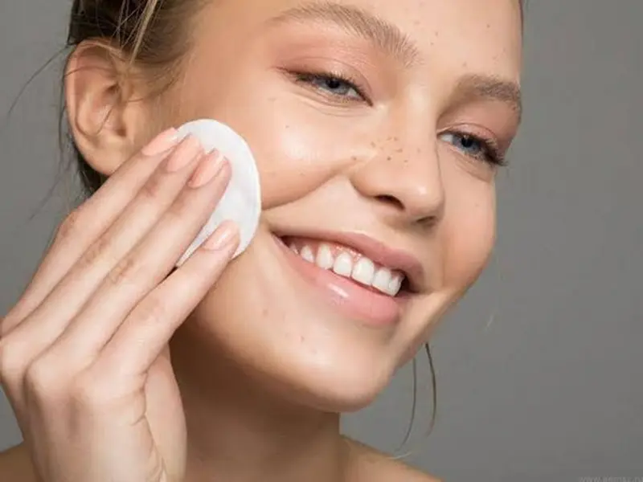
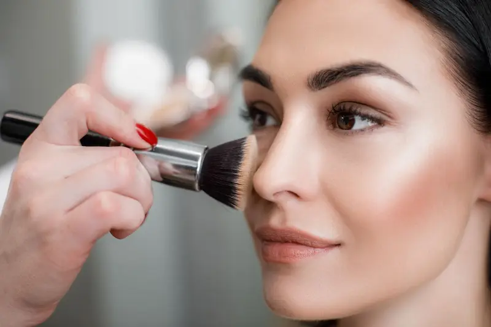
Типы макияжа: как выбрать подходящий образ
Разные виды макияжа создают разный эффект — от естественной свежести до выразительного вечернего образа. Выберите вариант, который подходит именно вам.
Натуральный макияж (эффект «своей кожи»)
Легкий и свежий образ без перегруженности, идеален на каждый день.
ПодробнееСияющий макияж (Glow-эффект здоровой кожи)
Придает коже сияние, визуально делает лицо более свежим и ухоженным.
ПодробнееSoft Glam макияж (дорогой и мягкий образ)
Универсальный вариант с аккуратными акцентами и эффектом “дорогой кожи”.
ПодробнееВечерний макияж (стойкий и выразительный образ)
Подходит для мероприятий, фотосъемок и вечерних выходов.
ПодробнееSmoky Eyes (глубокий и выразительный взгляд)
Классический макияж с акцентом на глаза для яркого образа.
ПодробнееЛифтинг-макияж (эффект свежего и подтянутого лица)
Визуально омолаживает, делает лицо более свежим и отдохнувшим.
ПодробнееСвадебный макияж (идеален для фото и видео)
Долговременный и универсальный макияж, который выглядит безупречно вживую и на камере.
Подробнее💡 Совет: лучший результат достигается при правильной подготовке кожи и подборе средств под ваш тип кожи.
Нужен профессиональный макияж?
Подберите идеальные продукты или запишитесь к визажисту для создания образа.
Посмотреть услуги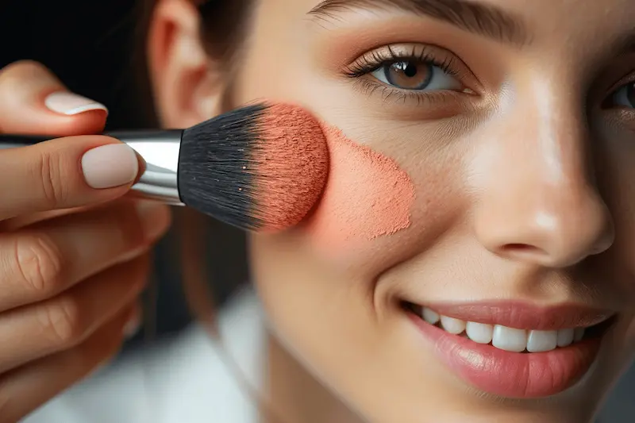
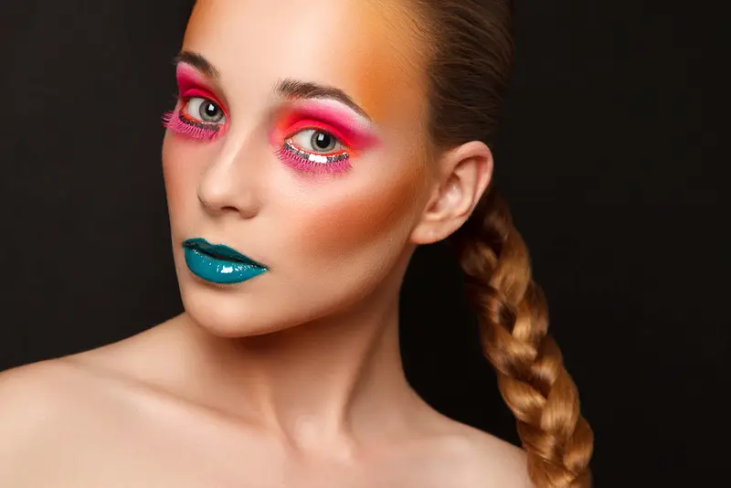
Макияж после косметологических процедур
После пилингов, чисток и других процедур кожа становится более чувствительной, поэтому важно выбирать деликатные текстуры и техники макияжа.
Такие техники помогают подчеркнуть результат процедур и сохранить комфорт кожи.
Выбор макияжа напрямую зависит от состояния кожи и ухода.
👉 Косметологические процедуры и уход → Выбрать специалиста →
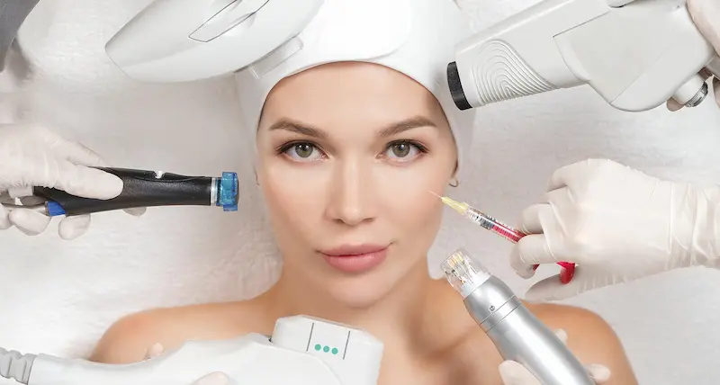
Часто задаваемые вопросы
Как выбрать подходящий тип макияжа?
Выбор зависит от типа кожи, освещения и ситуации. Для повседневной жизни лучше подходят натуральные и сияющие варианты, а для мероприятий — более стойкие и выразительные техники, такие как вечерний или soft glam.
Чем отличается дневной макияж от вечернего?
Дневной макияж легкий и максимально естественный, с минимальным покрытием. Вечерний — более плотный, стойкий и включает акценты на глаза или губы, чтобы макияж был заметен при искусственном освещении.
Какой макияж лучше подходит для жирной кожи?
Для жирной кожи подходят матирующие текстуры и стойкие формулы. Важно использовать лёгкий уход перед нанесением и фиксировать макияж, чтобы он не терял свежесть в течение дня.
Можно ли визуально омолодить лицо с помощью макияжа?
Да. Лифтинг-техники помогают визуально подтянуть черты лица, сделать кожу более свежей и скрыть признаки усталости без агрессивного контуринга.
Что выбрать: матовый или сияющий макияж?
Матовый макияж лучше подходит для жирной кожи и жаркой погоды, а сияющий — для сухой и тусклой кожи, когда нужно добавить свежести и эффекта увлажненности.
Почему макияж может выглядеть неровно?
Чаще всего причина — недостаточная подготовка кожи. Обезвоженность, шелушения или неправильный уход могут испортить даже качественную косметику.
Сколько держится профессиональный макияж?
При правильной технике и подготовке кожи макияж может держаться от 8 до 14 часов, сохраняя свежий вид и аккуратное покрытие.
Нужно ли подбирать макияж под возраст?
Да. С возрастом меняется текстура кожи, поэтому лучше выбирать более лёгкие формулы, избегать плотных покрытий и использовать техники, которые визуально освежают лицо.